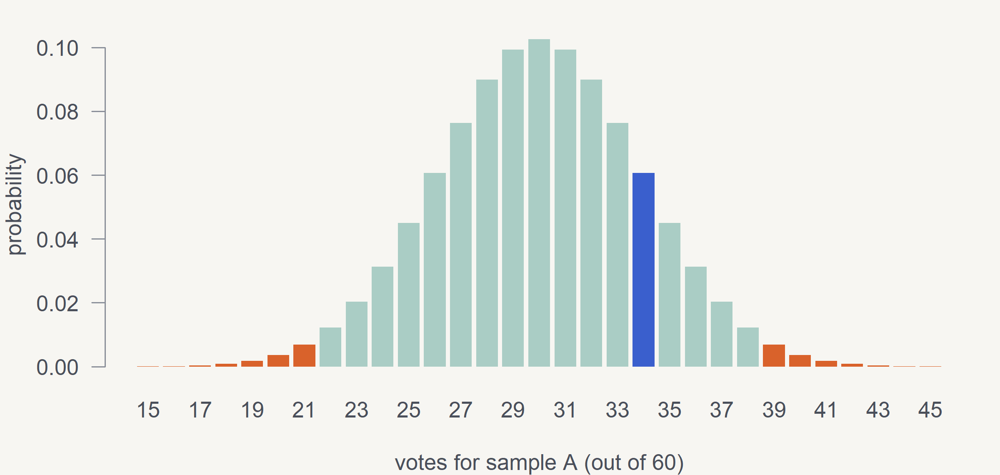
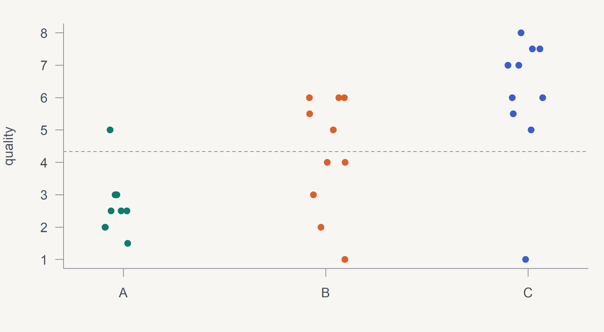

Paired t-test
data: B and E
t = 2.5868, df = 8, p-value = 0.03227
alternative hypothesis: true mean difference is not equal to 0
95 percent confidence interval:
0.04101305 0.71454251
sample estimates:
mean difference
0.3777778 Block 2 · exercises 5a – 5d
p < 0.05 → reject H₀. But p ≥ 0.05 does not mean the samples are the same – the panel may have been small (block 3).
| data type | situation | test in R |
|---|---|---|
| continuous / scale | normal distribution | t.test() |
| continuous / scale | non-normal distribution | wilcox.test() |
| counts of correct answers | sample vs. chance (duo, triangle) | binom.test() |
| counts in categories | several categories (Likert, preferences) | chisq.test() |
| yes / no | the same people before / after | mcnemar.test() |
Paired (dependent) data = the same assessors rated both samples → paired = TRUE.
In the Shapiro-Wilk test H₀ is “the data are normal” → p ≥ 0.05 is good news. For paired data we test the normality of the differences.
Paired t-test
data: B and E
t = 2.5868, df = 8, p-value = 0.03227
alternative hypothesis: true mean difference is not equal to 0
95 percent confidence interval:
0.04101305 0.71454251
sample estimates:
mean difference
0.3777778 Cheese B is significantly better than the original (p = 0.032). The Wilcoxon test gives the same conclusion.
| Test | samples | guessing probability |
|---|---|---|
| paired, duo-trio | 2 (+ reference) | 1/2 |
| triangle, tetrad | 3 / 4 | 1/3 |

Orange = critical region (p < 0.05). The observed 34 (blue) is in the usual guessing region.
50 consumers tasted both the old and the new recipe and said for each whether they would buy it (yes/no). Which test shows whether the new recipe changed purchase intent?
McNemar test – the same people, a binary answer, before/after. A χ² test of independence would ignore the pairing.
With 5 samples there are 10 pairs → with 10 t-tests the chance of a false alarm is about 40%.
First one global test (ANOVA, Kruskal-Wallis, Friedman), only then post-hoc comparisons with a correction.
chocolate <- data.frame(
quality = c(1.5, 2, 2.5, 3, 2.5, 2.5, 3, 3, 2, 5,
4, 3, 6, 5, 2, 6, 1, 6, 5.5, 4,
6, 6, 7.5, 7, 5, 1, 8, 7, 7.5, 5.5),
sample = factor(rep(c("A", "B", "C"), each = 10))
)
stripchart(quality ~ sample, data = chocolate,
vertical = TRUE, method = "jitter",
pch = 19, col = pal[1:3])
abline(h = mean(chocolate$quality), lty = 2)
F = variability between means / variability within groups.
Df Sum Sq Mean Sq F value Pr(>F)
sample 2 56.22 28.11 10.33 0.000465 ***
Residuals 27 73.45 2.72
---
Signif. codes: 0 '***' 0.001 '**' 0.01 '*' 0.05 '.' 0.1 ' ' 1[1] 0.002500272In the formula the measured value is on the left, the group on the right: quality ~ sample. The reversed form gives a meaningless result.
diff lwr upr p adj
B-A 1.55 -0.27885263 3.378853 0.1084253376
C-A 3.35 1.52114737 5.178853 0.0002986978
C-B 1.80 -0.02885263 3.628853 0.0543663996 A B
B 0.129673504 NA
C 0.009150466 0.08049856friedman.test(y ~ sample | assessor)| A | B | C | D | E | F | G | |
|---|---|---|---|---|---|---|---|
| H1 | 2 | 3 | 1 | ||||
| H2 | 3 | 1 | 2 | ||||
| H3 | 2 | 1 | 3 | ||||
| H4 | 1 | 2 | 3 | ||||
| H5 | 3 | 1 | 2 | ||||
| H6 | 3 | 1 | 2 | ||||
| H7 | 3 | 1 | 2 |
7 samples, each assessor tastes 3, every pair of samples meets exactly once.
4 ketchups were rated by 13 assessors in one session – each tasted all 4. The ratings are not normal. Which test?
Friedman test – the assessor is a block (everyone rated everything) and the data are not normal. Kruskal-Wallis would ignore that these are the same people.
Sensometrics in R · SaIT